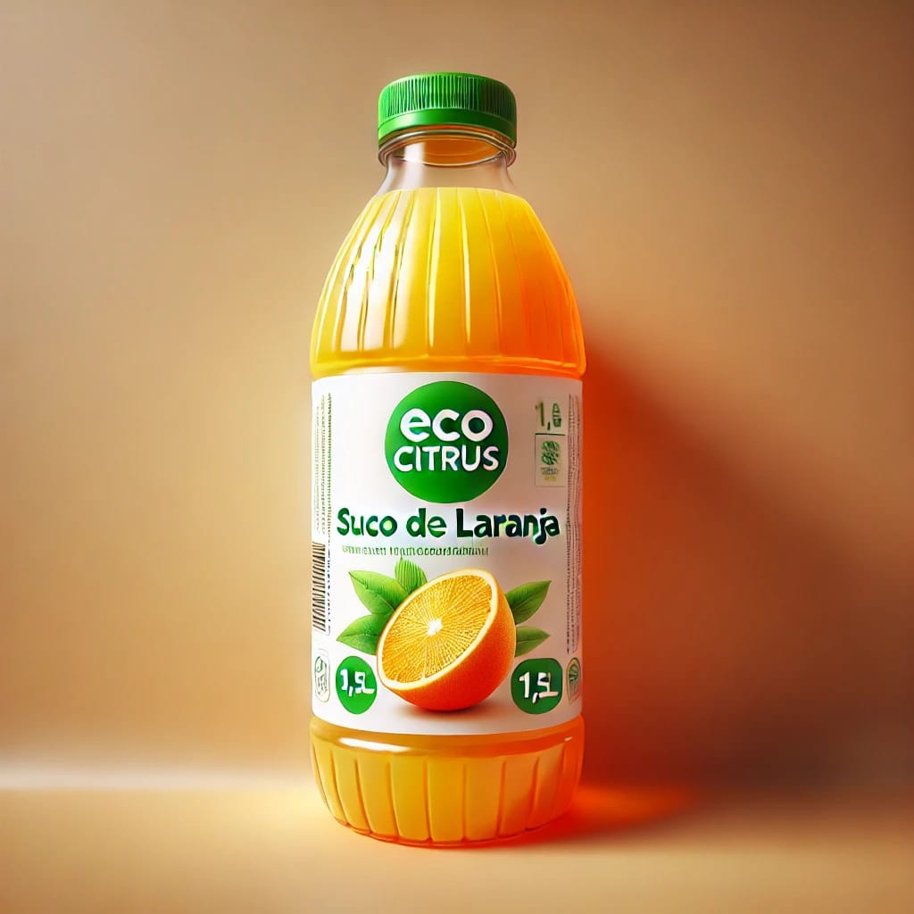

Rico em vitaminas essenciais: nosso suco é fortificado com vitaminas C, D e cálcio, essenciais para fortalecer a imunidade, manter os ossos saudáveis e dar mais disposição.
Sem conservantes artificiais: um suco puro e equilibrado com o melhor da natureza!
Sustentabilidade em cada gole: produzido com práticas ecológicas desde o cultivo responsável até a embalagem retornável!
Suco fortificado 1,5L
Laranjas 100% selecionadas: nosso principal foco é a qualidade, as laranjas são colhidas no auge da maturação para oferecer um sabor autêntico e refrescante.Rico em vitaminas essenciais: nosso suco é fortificado com vitaminas C, D e cálcio, essenciais para fortalecer a imunidade, manter os ossos saudáveis e dar mais disposição.
Sem conservantes artificiais: um suco puro e equilibrado com o melhor da natureza!
Sustentabilidade em cada gole: produzido com práticas ecológicas desde o cultivo responsável até a embalagem retornável!
quem Somos?
Na EcoCitrus, acreditamos que cada gole do nosso suco podefazer a diferença para você e para o planeta.
Somos uma empresa brasileira, localizada em Araraquara - SP, que une tradição, qualidade e inovação sustentável para oferecer um suco de laranja puro, nutritivo e produzido de forma responsável. Nosso compromisso vai além do sabor. Criamos um modelo de produção sustentável, aproveitando cada parte da laranja, desde o suco até as cascas, que se transformam em embalagens ecológicas. Além disso, com o nosso Programa Laranja Sustentável, incentivamos a reutilização das garrafas retornáveis, reduzindo o impacto ambiental e promovendo um consumo mais consciente. Com um time de mais de 200 colaboradores, trabalhamos todos os dias para levar a refrescância e a energia da laranja para sua casa, sempre com responsabilidade, inovação e respeito ao meio ambiente.
🌍 Nosso compromisso é com você e com o futuro do planeta.
💚 EcoCitrus - Energia que nasce da fruta.
missão
entregar aos nossos clientes um suco de alta qualidade, equilibrando sabor, frescor e sustentabilidade, através de práticas que minimizam impactos ambientais e promovem o desenvolvimento sustentável.visão
Ser uma referência no mercado de sucos sustentáveis, reconhecida pela inovação, compromisso ambiental e impacto positivo na sociedade, garantindo um equilíbrio entre qualidade, conveniência e responsabilidade ecológica.valores
Sustentabilidade: reduzimos desperdícios, utilizamos embalagens ecológicas e otimizamos processos para menor impacto ambiental.Qualidade e Segurança: garantimos um suco saboroso e seguro, preservando ao máximo as propriedades naturais da laranja.
Inovação Sustentável: investimos em tecnologias para aumentar a vida útil do produto sem comprometer nossa responsabilidade ambiental.
Compromisso Social: valorizamos parcerias com produtores locais e incentivamos boas práticas agrícolas.
Ética e Transparência: agimos com responsabilidade e honestidade, prezando pelo bem-estar dos consumidores e parceiros.
Sustentabilidade
Programa laranja sustentável:
Nossas embalagens são feitas com propriedades da casca da laranja, tornando-as ecologicamente sustentáveis, esse material inovador reduz a dependência de plásticos convencionais e contribui para a economia circular, minimizando o impacto ambiental.Aqui, cada garrafa conta uma história de sustentabilidade, para frisar isso, criamos o programa "laranja sustentável", onde você consome o seu suco favorito e ainda ajuda o meio ambiente.
Como funciona?
Compre nosso suco de laranja fortificado em uma de nossas revendedoras.Consuma! Aproveite o doce sabor e guarde a embalagem vazia.
Troque e economize: bateu a saudade do suco de laranja fortificado? Sem problemas! Leve a garrafa a um dos nossos revendedores e pague menos na próxima compra! Agora é com a gente! As embalagens retornam para higienização e reutilização, reduzindo o impacto ambiental.
Fale Conosco
Teve algum problema com a qualidade de algum de nossos produtos?Por favor, ligue para o 0800 11 3162-8922
Horário de atendimento das 08:00 às 17:00
Fábrica
Av. Santa Maria, 1931
São José
Araraquara - SP
CEP: 13.410.093